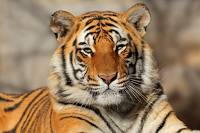

Harimau adalah spesies kucing terbesar yang masih hidup dari genus Panthera. Harimau memiliki ciri loreng yang khas pada bulunya, berupa garis-garis vertikal gelap pada bulu oranye, dengan bulu bagian bawah berwarna putih

Sapi atau lembu adalah hewan ternak anggota famili Bovidae dan subfamili Bovinae. Sapi dipelihara terutama untuk dimanfaatkan susu dan dagingnya sebagai pangan manusia